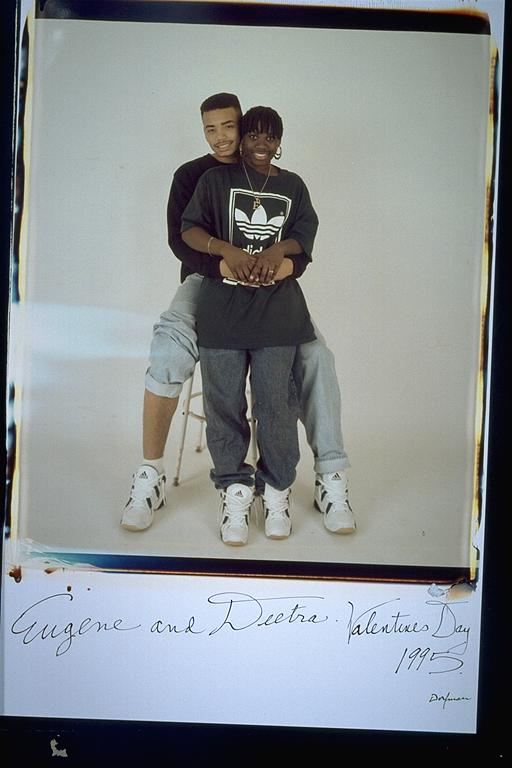

Pals: Boys Who Grew Up Together
elsadorfman.com/pals
Eugene: Me & Deitra: Deitra Kathleen Collins & I met and began seeing each other on June 6, 1993. She is and was my first and only true love. We thought we were being cute by wearing the same sneakers. She is wearing a chain with a big "E" on representing me. Those were good times, but we've had better since then and will have many more to come in a long life together. She is definitely the one. We have had our ups and downs, broken up and got back together two times, but through it all I have no doubt that she will be my wife. And I thank God for her, her family and everything that she has taught me. I love you baby!
Aldo: I remember the day Eugene met her. He was leaving my house, and her family lives next door to mine. They talked for a minute, then he ran back in like, "I need a pen, I need a pen, this girl next door, I'm getting her number." Well, that was many years ago, maybe 8 or 9, and now they are as happy as ever. They make a really good couple and really fulfill what the other one needs.

elsad@comcast.net